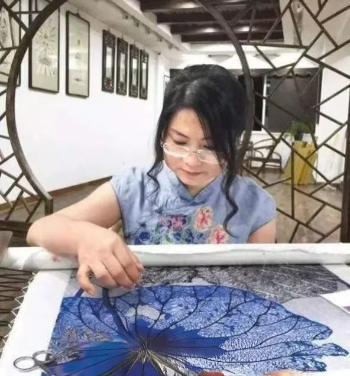

苏绣国家非遗传承人 · 从业42年

陈英华，1964年出生于苏州刺绣世家，自幼随母亲学习苏绣技艺。18岁进入苏州刺绣研究所，师从中国工艺美术大师任嘒闲先生，专攻双面绣与乱针绣技法。四十余年来，她始终坚守在苏绣创作与传承的第一线，是当代苏绣艺术的代表性人物。
陈英华的刺绣生涯可以分为三个阶段：早年跟随母亲打下扎实的苏绣基本功；青年时期在苏州刺绣研究所系统钻研双面绣和乱针绣技法，技艺日趋成熟；中年以后在传承传统的基础上大胆创新，将西方油画的色彩理论和光影表现融入苏绣创作，形成了独具特色的个人风格。
双面绣《猫》：陈英华的代表作之一，作品中的猫眼神灵动、毛发丝理分明，正反两面图案完全一致、毫无破绽，展现出苏绣双面绣技艺的最高水准。该作品曾在2006年中国工艺美术大师作品展中获得金奖。
双面绣《金鱼》：以金鱼在水中游弋为题材，运用苏绣特有的"水路"针法，将金鱼的鳞片光泽和水波荡漾表现得淋漓尽致，鱼尾轻薄透明、栩栩如生。
乱针绣《水乡》：以苏州水乡古镇为题材，运用乱针绣的交叉运针技法，将油画的质感与光影效果融入刺绣之中，远看如油画，近看针迹分明，色彩层次丰富、过渡自然。
乱针绣《荷花》：以夏日荷塘为灵感，通过疏密有致的针法和深浅交错的色彩，将荷花的清雅高洁和荷叶的碧绿盎然表现得生动传神，被誉为"针尖上的写意画"。
2008年，陈英华被评为国家级非物质文化遗产代表性传承人，这是国家对她在苏绣艺术领域杰出贡献的充分肯定。她的作品先后在中国美术馆、苏州博物馆、上海博物馆举办个展，多幅作品被国内外艺术机构收藏。
2015年，陈英华获得"中国工艺美术大师"荣誉称号。2018年，她受邀参加"中国非物质文化遗产传承人优秀作品展"，作品《双面绣·金鱼》被中国国家博物馆收藏。2020年，她获得"中华非物质文化遗产传承人薪传奖"，这是全国非遗传承人的最高荣誉之一。2022年，她的个人艺术馆在苏州正式开馆，成为苏绣艺术展示和交流的重要平台。
陈英华深知技艺传承的重要性，先后培养苏绣传人30余名，其中多人已成为省级工艺美术大师。她每年在苏州刺绣研究所开设传承班，亲自传授双面绣、乱针绣等核心技艺，每期学员10至15人，学习周期为三年。
近年来，陈英华将苏绣带入清华大学、中央美术学院、中国美术学院等高校课堂，开设专题讲座和工作坊，让年轻一代感受传统刺绣的魅力。她还与苏州大学艺术学院合作，建立了"苏绣艺术研究中心"，将传统刺绣技艺与现代设计教育相结合，探索苏绣艺术的新发展方向。
2022年，陈英华发起"苏绣进乡村"公益项目，深入苏州周边乡镇培训农村妇女，累计培训绣娘300余人，既解决了当地妇女就业问题，又扩大了苏绣技艺的传承基础。该项目得到了苏州市政府的大力支持，被评为"非遗助力乡村振兴"优秀案例。
陈英华的事迹多次被中央电视台、人民日报、新华网等主流媒体报道。2021年，央视纪录片《非遗里的中国》对她进行了专题报道，向全国观众展示了苏绣的艺术魅力和传承人的坚守精神。她的故事还被编入中小学课外阅读教材，成为青少年了解传统文化的生动素材。
在国际交流方面，陈英华曾多次赴法国、意大利、日本、韩国等国家举办苏绣作品展和现场技艺展示，向世界传播中国刺绣文化。她的作品被多家海外艺术机构收藏，成为中外文化交流的重要桥梁。